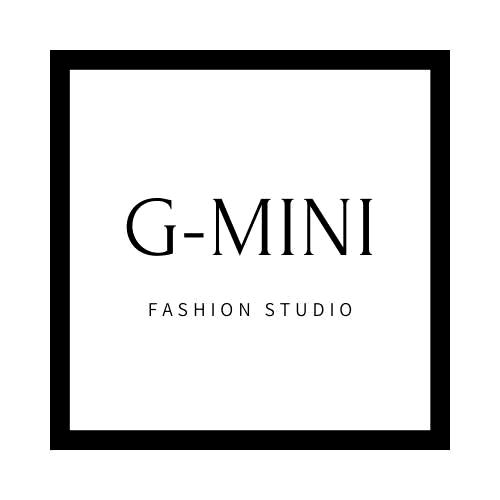
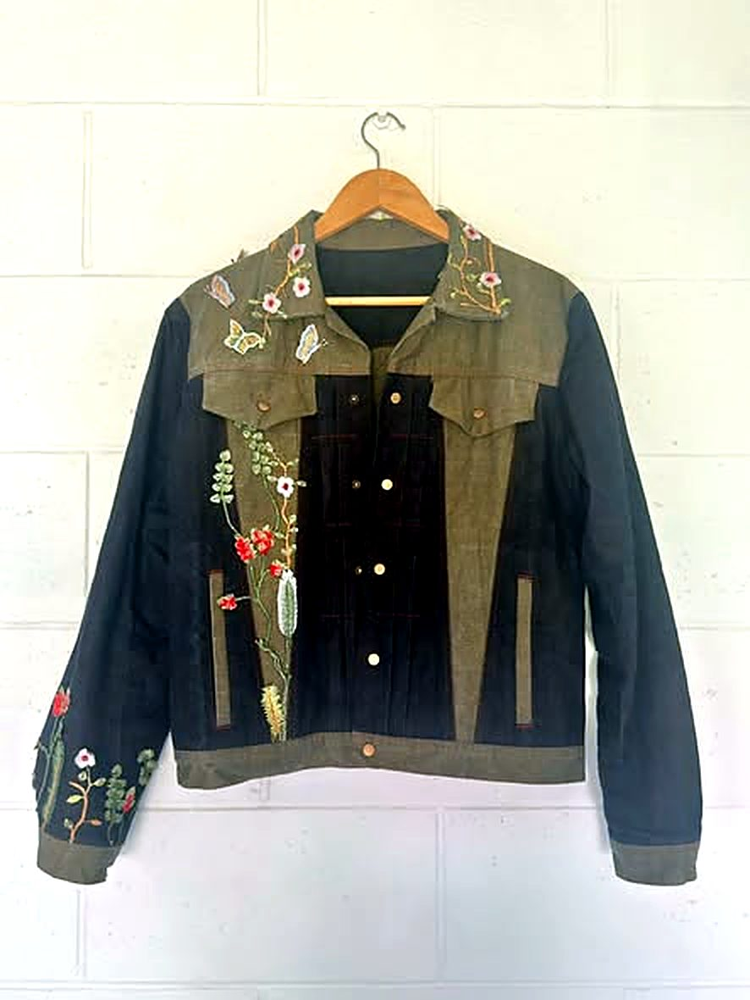
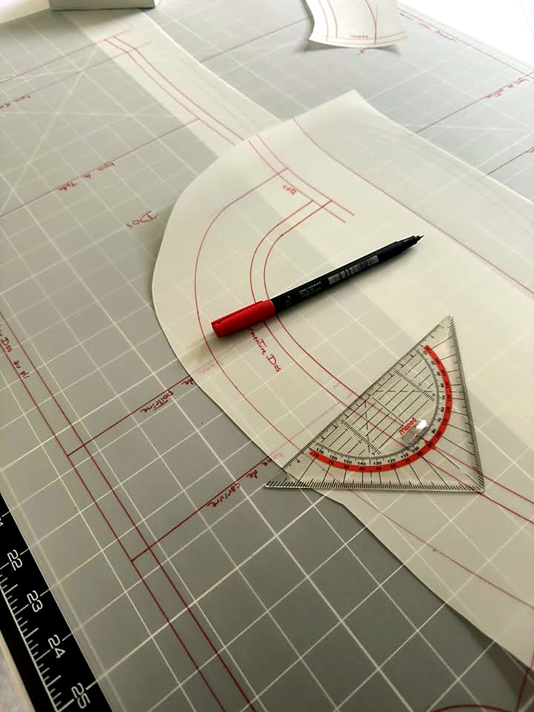
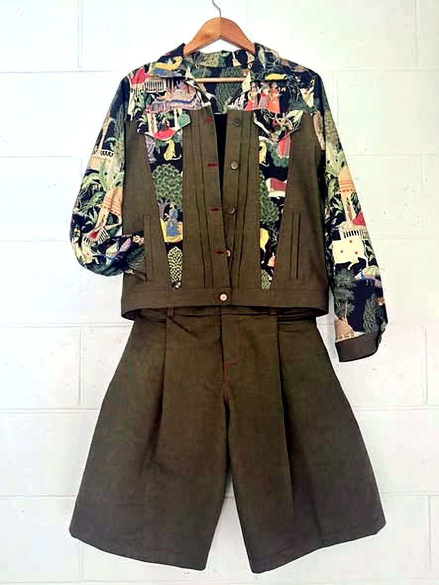
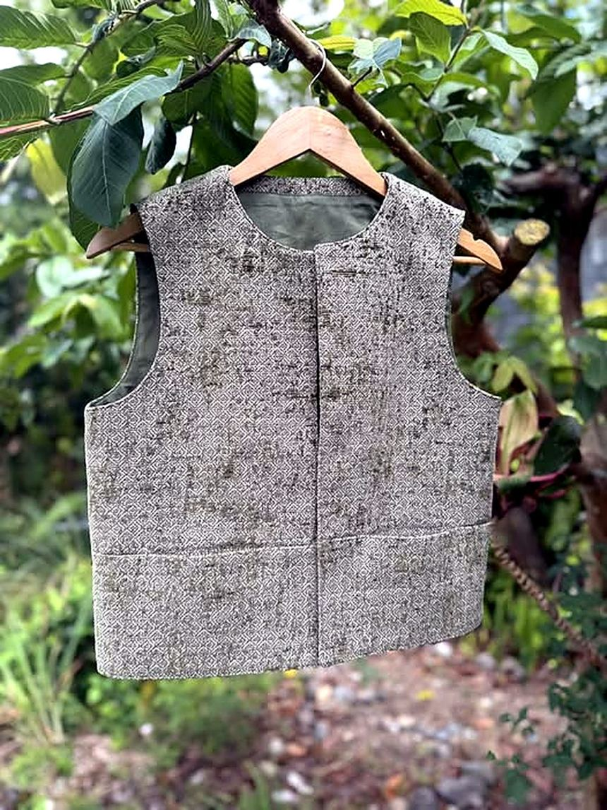
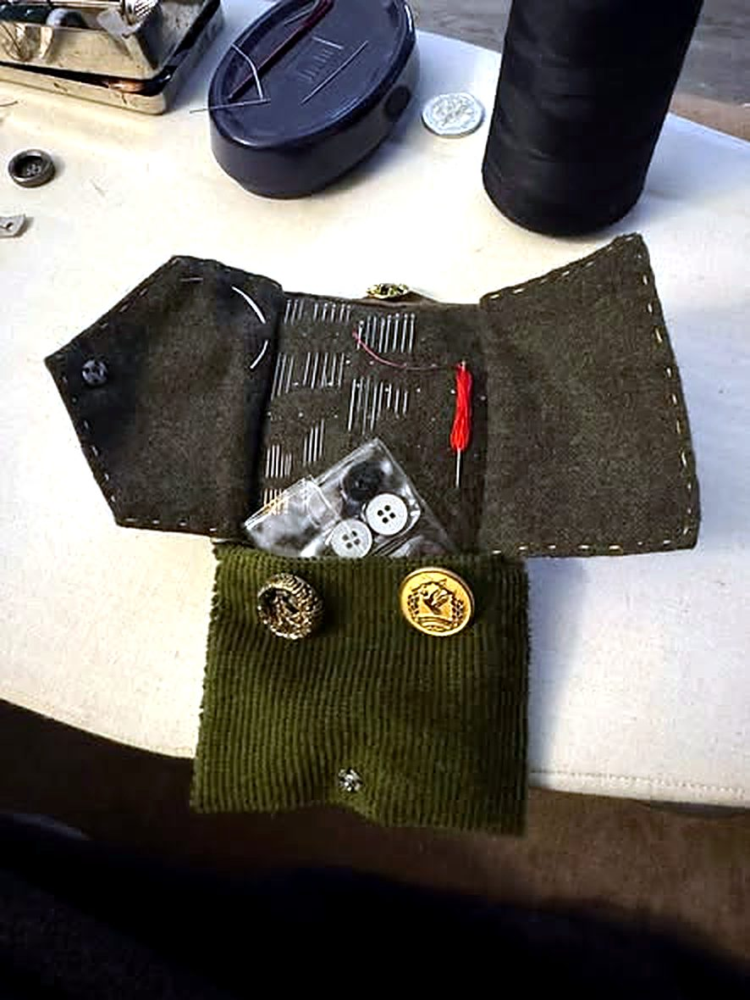
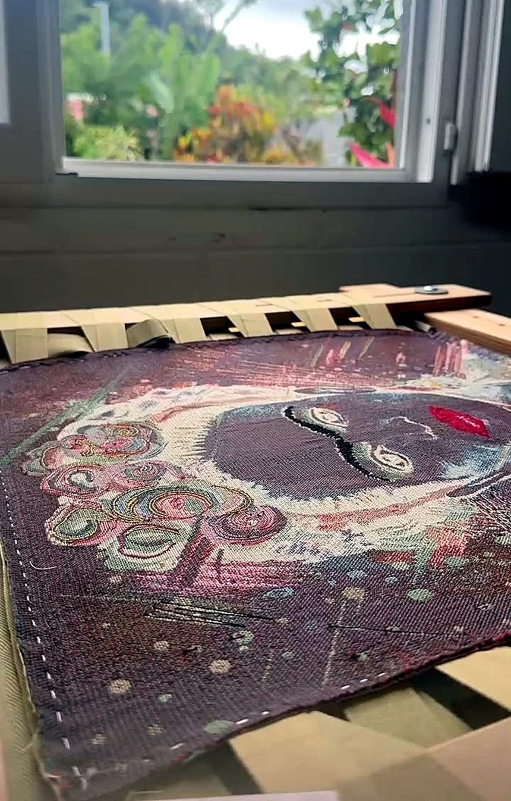
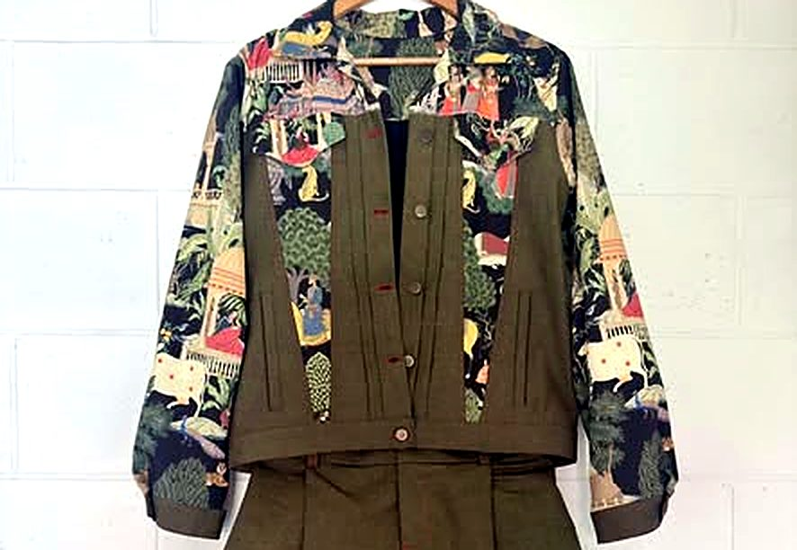

Atelier · L’Entre-DeuxUn atelier professionnel à L’Entre-Deux, et les créations G-MINI Fashion Studio : « une mode élégante, durable et inspirée par notre île ».


De la pièce unique à la retouche du quotidien, G-Mini Couture travaille vos vêtements avec soin, du patron jusqu’à la dernière finition.
Vestes, ensembles, pièces uniques : un vêtement pensé pour vous.
Ajuster, reprendre, offrir une seconde vie à vos vêtements préférés.
Le crochet de Lunéville, pour des détails qui signent une pièce.
Des pièces aux couleurs franches, du bleu marine au kaki, réveillées par des manches fleuries.




Faites glisser pour voir la suite →
La broderie au crochet de Lunéville : le geste patient de la haute couture, point après point, pour un col, une manche, le détail qui signe toute une pièce.
« Une mode élégante, durable et inspirée par notre île. »

Trois choix, une phrase, et votre demande part toute prête : l’atelier vous répond avec les bonnes questions.